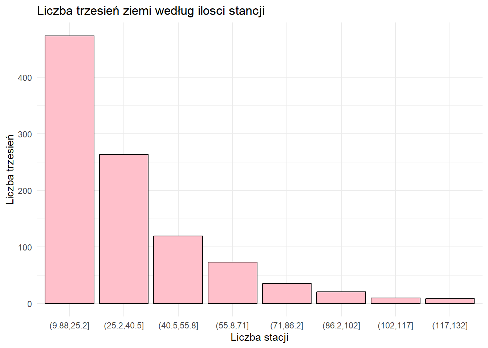
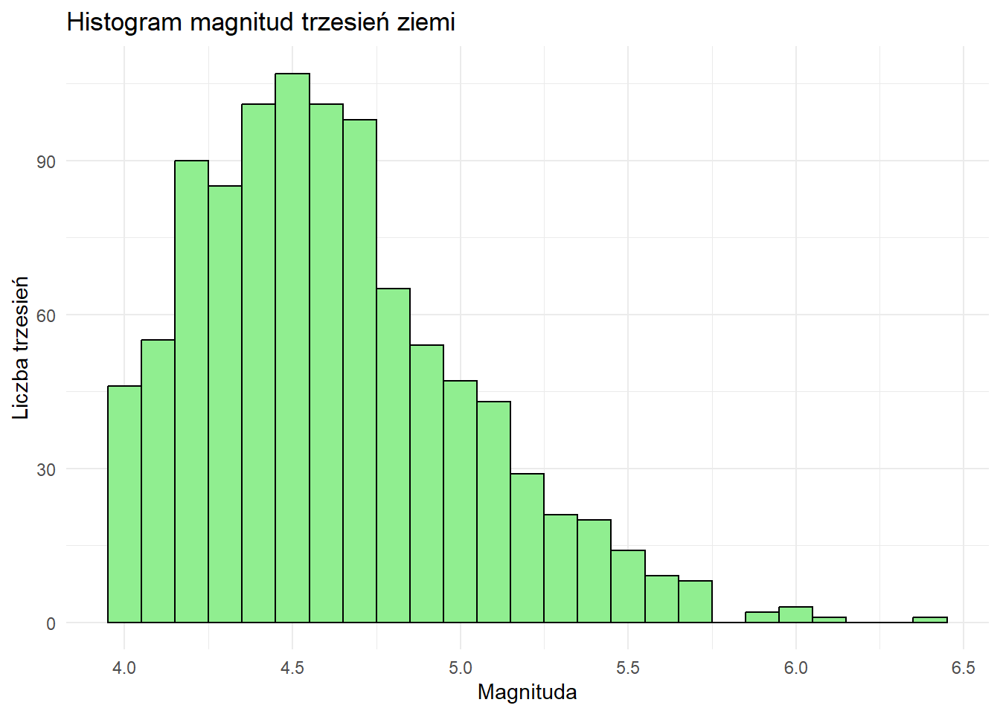
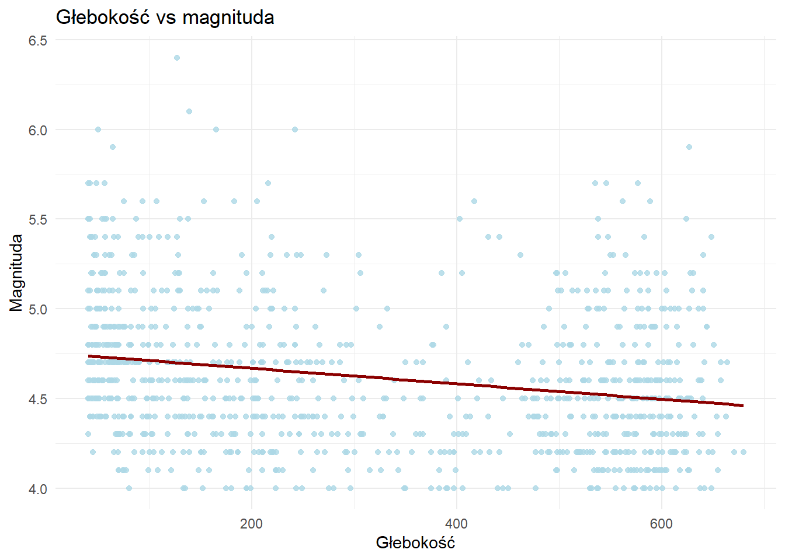

Last updated: 2026-01-18
Checks: 6 1
Knit directory: R/
This reproducible R Markdown analysis was created with workflowr (version 1.7.2). The Checks tab describes the reproducibility checks that were applied when the results were created. The Past versions tab lists the development history.
The R Markdown file has unstaged changes. To know which version of
the R Markdown file created these results, you’ll want to first commit
it to the Git repo. If you’re still working on the analysis, you can
ignore this warning. When you’re finished, you can run
wflow_publish to commit the R Markdown file and build the
HTML.
Great job! The global environment was empty. Objects defined in the global environment can affect the analysis in your R Markdown file in unknown ways. For reproduciblity it’s best to always run the code in an empty environment.
The command set.seed(20260114) was run prior to running
the code in the R Markdown file. Setting a seed ensures that any results
that rely on randomness, e.g. subsampling or permutations, are
reproducible.
Great job! Recording the operating system, R version, and package versions is critical for reproducibility.
Nice! There were no cached chunks for this analysis, so you can be confident that you successfully produced the results during this run.
Great job! Using relative paths to the files within your workflowr project makes it easier to run your code on other machines.
Great! You are using Git for version control. Tracking code development and connecting the code version to the results is critical for reproducibility.
The results in this page were generated with repository version ee55479. See the Past versions tab to see a history of the changes made to the R Markdown and HTML files.
Note that you need to be careful to ensure that all relevant files for
the analysis have been committed to Git prior to generating the results
(you can use wflow_publish or
wflow_git_commit). workflowr only checks the R Markdown
file, but you know if there are other scripts or data files that it
depends on. Below is the status of the Git repository when the results
were generated:
Ignored files:
Ignored: .RData
Ignored: .Rhistory
Untracked files:
Untracked: analysis/images/budynek-wtd-02.jpg
Untracked: analysis/images/budynek-wtd-03.jpg
Untracked: analysis/images/budynek-wtd-04.jpg
Unstaged changes:
Modified: analysis/about.Rmd
Modified: analysis/ad.Rmd
Modified: analysis/index.Rmd
Note that any generated files, e.g. HTML, png, CSS, etc., are not included in this status report because it is ok for generated content to have uncommitted changes.
These are the previous versions of the repository in which changes were
made to the R Markdown (analysis/ad.Rmd) and HTML
(docs/ad.html) files. If you’ve configured a remote Git
repository (see ?wflow_git_remote), click on the hyperlinks
in the table below to view the files as they were in that past version.
| File | Version | Author | Date | Message |
|---|---|---|---|---|
| Rmd | ee55479 | OlekSim17 | 2026-01-17 | Initial commit of workflowr project |
| html | ee55479 | OlekSim17 | 2026-01-17 | Initial commit of workflowr project |
Co przedstawia : Zbiór quakes zawiera 1000 trzęsień ziemi zarejestrowanych w rejonie Fidżi (1964). Źródło: National Earthquake Information Center (NEIC) USA
Zmienne:
lat, long - współrzędne
depth - głębokość (km)
mag - magnituda (skala Richtera)
stations - liczba stacji sejsmicznych
nowe <- quakes %>%
mutate(
intensywnosc = mag * stations / 100
) %>%
filter(intensywnosc > 4.5) %>%
group_by(intensywnosc) %>%
summarise(
srednia_magnituda = mean(mag),
srednia_glebokosc = mean(depth),
max_magnituda = max(mag),
max_glebokosc = max(depth),
min_magnituda = min(mag),
min_glebokosc = min(depth)
) %>%
head(20)
print(nowe)# A tibble: 20 × 7
intensywnosc srednia_magnituda srednia_glebokosc max_magnituda max_glebokosc
<dbl> <dbl> <dbl> <dbl> <int>
1 4.51 5.5 403 5.5 403
2 4.52 5.2 195 5.2 195
3 4.56 5.3 318. 5.3 550
4 4.59 5.4 93 5.4 93
5 4.63 5.2 53 5.2 53
6 4.64 5.1 499 5.1 499
7 4.70 5.4 292. 5.4 538
8 4.72 5.3 565 5.3 565
9 4.73 5.5 40 5.5 40
10 4.73 5.2 545 5.2 545
11 4.75 5.4 384. 5.4 649
12 4.87 5.6 153 5.6 153
13 4.93 5.3 641 5.3 641
14 4.98 6 50 6 50
15 5 5 636 5 636
16 5.00 5.5 40 5.5 40
17 5.06 5.5 58 5.5 58
18 5.13 5.7 216 5.7 216
19 5.22 5.5 130 5.5 130
20 5.26 5.6 93 5.6 93
# ℹ 2 more variables: min_magnituda <dbl>, min_glebokosc <int>ggplot(quakes, aes(x = cut(stations, breaks = 8))) +
geom_bar(fill = "pink", color = "black") +
labs(title = "Liczba trzesień ziemi według ilosci stancji",
x = "Liczba stacji",
y = "Liczba trzesień") +
theme_minimal()
| Version | Author | Date |
|---|---|---|
| ee55479 | OlekSim17 | 2026-01-17 |
Wykres słupkowy liczby trzesień ziemi według ilosci stancji pokazuje, że im mniej stacji tym więcej trzęsięń ## Histogram magnitud
ggplot(quakes, aes(x = mag)) +
geom_histogram(binwidth = 0.1, fill = "lightgreen", color = "black") +
labs(title = "Histogram magnitud trzesień ziemi",
x = "Magnituda",
y = "Liczba trzesień") +
theme_minimal()
| Version | Author | Date |
|---|---|---|
| ee55479 | OlekSim17 | 2026-01-17 |
Histogram magnitud trzesień ziemi pokazuje, że najwięcej trzęsień występuje pomiędzy 4.3 a 4.7 magnitudą.
ggplot(quakes, aes(x = depth, y = mag)) +
geom_point(alpha = 0.8, color = "lightblue") +
geom_smooth(method = "lm", se = FALSE, color = "darkred") +
labs(title = "Głebokość vs magnituda",
x = "Głebokość",
y = "Magnituda") +
theme_minimal()`geom_smooth()` using formula = 'y ~ x'
| Version | Author | Date |
|---|---|---|
| ee55479 | OlekSim17 | 2026-01-17 |
Wykres liniowy zależności magnitudy od głębokości pokazuję, że z zwiększeniem głębokości magnituda maleje
sessionInfo()R version 4.4.0 (2024-04-24 ucrt)
Platform: x86_64-w64-mingw32/x64
Running under: Windows 11 x64 (build 26200)
Matrix products: default
locale:
[1] LC_COLLATE=English_United States.utf8
[2] LC_CTYPE=English_United States.utf8
[3] LC_MONETARY=English_United States.utf8
[4] LC_NUMERIC=C
[5] LC_TIME=English_United States.utf8
time zone: Europe/Warsaw
tzcode source: internal
attached base packages:
[1] stats graphics grDevices utils datasets methods base
other attached packages:
[1] dplyr_1.1.4 ggplot2_4.0.0 workflowr_1.7.2
loaded via a namespace (and not attached):
[1] sass_0.4.10 generics_0.1.4 stringi_1.8.7 lattice_0.22-6
[5] digest_0.6.37 magrittr_2.0.4 evaluate_1.0.5 grid_4.4.0
[9] RColorBrewer_1.1-3 fastmap_1.2.0 Matrix_1.7-0 rprojroot_2.1.1
[13] jsonlite_2.0.0 processx_3.8.6 whisker_0.4.1 ps_1.9.1
[17] promises_1.5.0 httr_1.4.7 mgcv_1.9-1 scales_1.4.0
[21] jquerylib_0.1.4 cli_3.6.5 rlang_1.1.6 splines_4.4.0
[25] withr_3.0.2 cachem_1.1.0 yaml_2.3.12 otel_0.2.0
[29] tools_4.4.0 httpuv_1.6.16 vctrs_0.6.5 R6_2.6.1
[33] lifecycle_1.0.4 git2r_0.36.2 stringr_1.5.2 fs_1.6.6
[37] pkgconfig_2.0.3 callr_3.7.6 pillar_1.11.1 bslib_0.9.0
[41] later_1.4.5 gtable_0.3.6 glue_1.8.0 Rcpp_1.1.0
[45] xfun_0.55 tibble_3.3.0 tidyselect_1.2.1 rstudioapi_0.17.1
[49] knitr_1.51 farver_2.1.2 htmltools_0.5.9 nlme_3.1-164
[53] rmarkdown_2.30 labeling_0.4.3 compiler_4.4.0 getPass_0.2-4
[57] S7_0.2.0